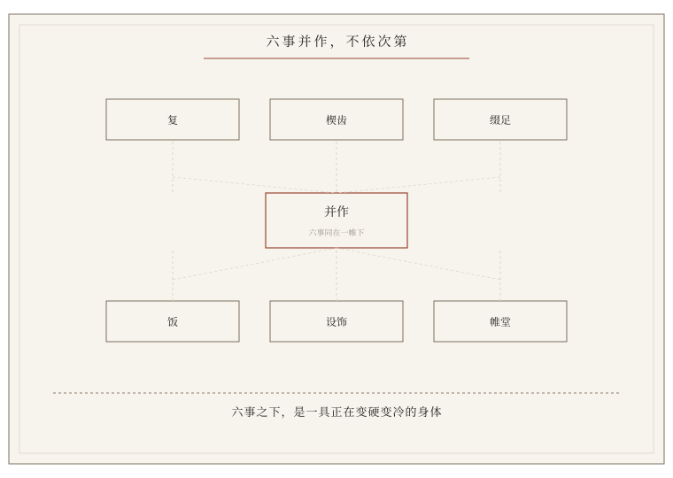

檀弓上 · 三·一百零三 · 第 306 课
复、楔齿、缀足、饭、设饰、帷堂，并作。
说什么事：人刚死，六件事同时并举：招魂、撑开牙关、缀住双足、饭含、设饰、设帷。
落在哪一层：始死之节目。论「六事并作，不依次第」。
为何编在此位：上二课论「池」「椑」，皆是预备好的器物；此课转入人刚断气那一刻的六件事——预备之物，此时一齐上手。
【经】復、楔齒、綴足、飯、設飾、帷堂，並作。
【注】設飾，謂遷尸又加新衣。
【疏】此一节论始死之事。「复」，招魂也。「楔」，柱也；招魂之后，用角柶柱亡人之齿令开，使含时不闭也。「缀足」者，复用燕几缀亡人之足令直，使著屦时不辟戾也。饭者，饭食也。「设饰」者，谓袭敛迁尸之时，及又加著新衣也。「帷堂」者，谓小敛时。「并作」者，作，起为也；自「复」以下，诸事并起以帷堂，故云「并作」。
复 招魂。人初死，持其衣登屋，北面呼名，冀其魂返。
楔齿 用角柶撑开牙齿。楔，柱、撑。齿闭则不能饭含。
缀足 用燕几（一种小几）把双足缀住使直，以便穿屦。
饭 饭含。以米贝纳于死者口中。
设饰 增设服饰。注「迁尸又加新衣」。
帷堂 在堂上设帷。疏「谓小敛时」。
并作 一齐动手。作，起、为。
辟戾 疏语，偏斜扭曲。辟，偏；戾，曲。
角柶 角制的匙形器，用以撑齿。
招魂、撑齿、缀足、饭含、设饰、设帷，六件事一齐做起来。
此节六个动作，一句话收：「并作」。
按常理，丧事是依次第的：先复，再楔齿，再缀足，再饭，再设饰，再帷堂。疏也确实是按这个次序一一解释的。但经文偏说「并作」——同时并举。
疏给了理由：「自复以下，诸事并起以帷堂。」意思是这六件事都围着「帷堂」这一件事转：设帷是为了不让外人看见里面正在做的这些事。所以不是六件事同时开始，而是六件事同在一个「帷」下起办。
这个解释很要紧。它把「并作」从时间问题变成了空间问题：六事并起于帷中。帷一设，里面同时有六双手在动。
为什么急到这个地步？因为尸体在变。齿一闭就饭不进去了；足一屈就穿不上屦了；衣一僵就设饰不成了。这一切都要在身体还软的时候做完。丧礼的从容，是建立在这一段不容从容的时间上的。
第一层 六事各有其敌 每一件事，都是对一个具体的「变」： - 复，敌「魂去」； - 楔齿，敌「齿闭」； - 缀足，敌「足屈」； - 饭，敌「口空」； - 设饰，敌「衣故」； - 帷堂，敌「人见」。
六事之下，是一具正在变硬变冷的身体。礼不是不知死，是知得极细——细到知道牙关何时合、足何时僵。
第二层 「并作」之不得已 礼书中最讲次序的地方，此处偏说「并」。这不是礼的疏漏，是礼的诚实：有些时刻，次序让位于时限。若按部就班，六件事只能做成三件。礼宁可牺牲次序，不肯牺牲事。
这一点可与 311「朝奠日出，夕奠逮日」并读：礼有依天时者，也有依人事之急者。二者并存，不相害。
第三层 帷的分量 六事之中，帷堂最特殊：它不是对死者的动作，是对生者的。设帷，是把这一段「不能看的时刻」遮起来。
为什么要遮？因为此时死者的形貌正在改变：衣要换、口要开、足要缀。这些动作对旁观者是难堪的。帷不是为死者遮羞——死者无知；帷是为生者留一分体面，也留一分不必记住的余地。
礼的体贴，常常落在这种地方：不解释，只遮起来。
第四层 注只释「设饰」一条 六事之中，注只给「设饰」作了注：「谓迁尸又加新衣」。其余五事，注皆不释——因为其义显，读者自知。注的取舍，本身就是一种判断：哪一条需要说，哪一条不必说。
而「设饰」之所以须注，是因为此语易混：设饰不是给死者化妆，是迁尸时加新衣。一字之差，意义全变。
与今日何干 今人送终，也在「并作」：擦身、换衣、联系殡仪、通知亲友，几乎同时。此节提醒的是：这些事都有时限，过了那一段就做不成；而该遮起来的，也要遮起来。
| 左 | 右 |
|---|---|
| 复 | 敌魂去 |
| 楔齿 | 敌齿闭 |
| 缀足 | 敌足屈 |
| 饭 | 敌口空 |
| 设饰 | 敌衣故 |
| 帷堂 | 敌人见 |
| 并作 | 不依次第 |
| 以帷堂 | 六事同在一帷下 |
画一处堂上，视点自堂下略低平视。堂中央设一道素帷（帷自梁下垂至地，中间留一道缝），帷后隐约可见一具卧席与数个人影的轮廓（只画影，不画人）。帷前堂下，站着三四人各持一物：一人持一件衣服仰面（作招魂之状）、一人持一支角制小匙、一人持一具小几、一人捧一只陶盂。四人不相顾，各自向帷。不写文字、不画人面细节。赭色只用在帷的系带，与那支角匙的尖端。
